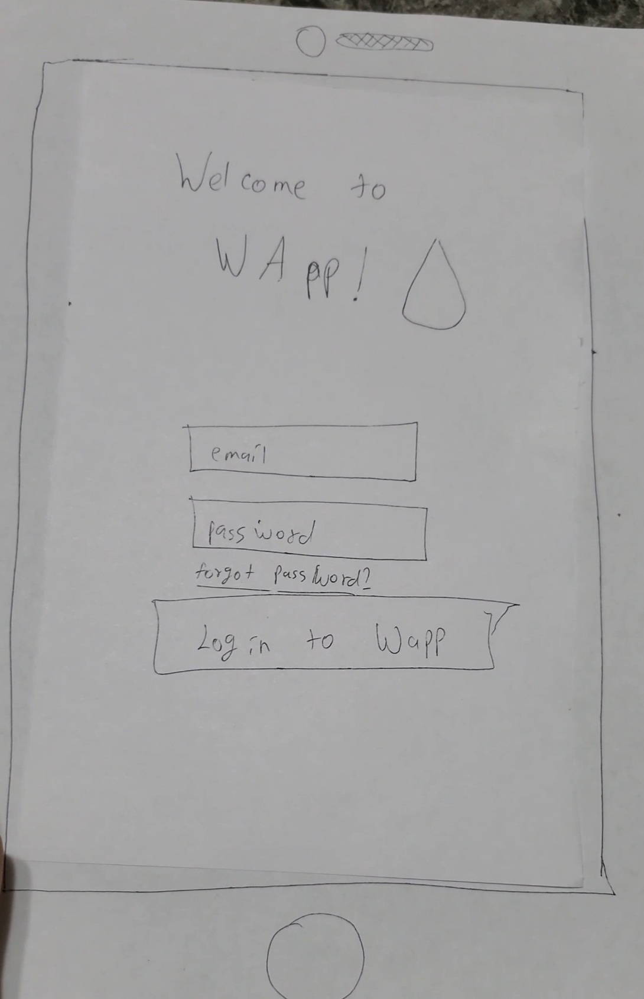
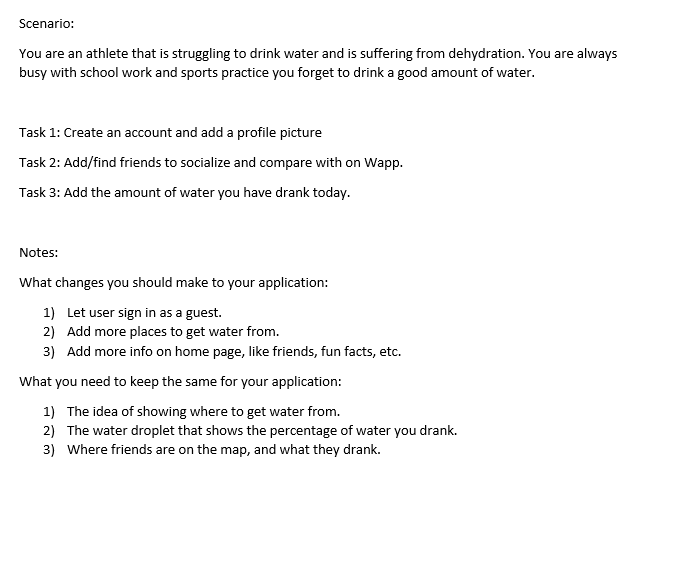
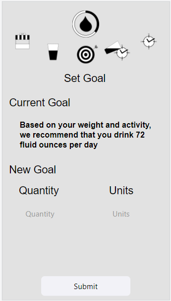
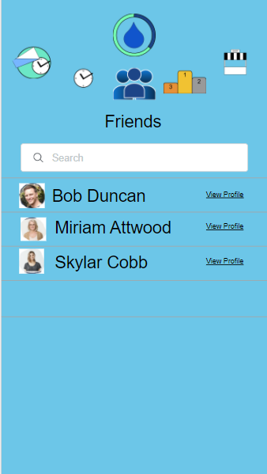

Problem Statement: Hydration Reminder

Many people forget to drink water even though it's essential and suffer from dehydration. Our solution is to make an app that lets users customize times of the reminders; these reminders will remind app users to drink water.
Affinity Diagram: WAPP

My team and I developed an affinity board for an app designed around the concept of drinking water.
Persona: 4 Personnas for WAPP

Four personas of a typical WAPP user.
Storyboards

Slides illustrationg why WApp is a usefull app.
Storyboards

Storyboards
Multiple sketches of the WApp app design.
Paper Prototype: WApp
A functional prototype of our app: WApp.
Testing Script
Feedback given by a person to imporve the prototype.
Low-Fi Prototype: WApp App
A low fidelity prototype of the app WApp.
High-Fi Prototype: WApp App
A high fidelity prototype of the app WApp.
High-Fi Prototype: WApp App

A final presentation of the app WApp.